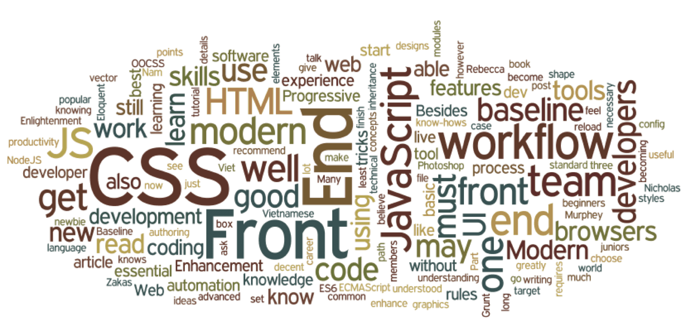

Фронтенд разработка
Веб-разработкой я заинтересовался по причине интереса к дизайну. При создание кажого сайта создается для каждого его уникальный дизайн. Свой путь изучения я начал с основ верстки: HTML и CSS
HTML(Hypertext Markup Language) - это стандартный языкт, который используется для структурирования и отображения веб-страницы и её контента.
CSS(Cascading Style Sheets) - это язык иерархических правил, используемый для представления внешнего вида документа, написанного на HTML или XML. CSS описывает, каким образом элемент должен отображаться на экране, на бумаге, голосом или с использованием других медиа средств.
Изучал я их по документациям, а потом с помощью найденных курсов закреплял их на практике, создавая макеты из примеров. После закрепления навыков я начал чтение документации по JavaScript и продолжал работать с макетами без JavaScript.
JavaScript - это язык программирования, который используют для написания frontend- и backend-частей сайтов.JS поддерживают все популярные браузеры. Во frontend-части сайтов язык используют для создания интерактива (анимаций, всплывающих форм, автозаполнения), так как он связан с HTML и CSS и может ими манипулировать.
Примеры первых завершенных проетов изображены ниже:
После изучения JavaScript я узнал о существовании многих библиотек, фреймворков, преопроцессоров и сборщиков для сайтов
Мне довелось познакомиться с конструкторы grunt и gulp. Начал регулярно пользоваться препроцессорами для CSS: less и sass. Ознакомился с Jqeury, React, Vue и Angular.
Фреймворк — это программная платформа, которая упрощает разработку программного продукта, определяет структуру проекта и помогает удобно объединять в нём разные компоненты.
Библиотека — код, который встраивается в приложение и решает ограниченный набор задач в зависимости от того, какие обязанности на нее возложили разработчики.
Препроцессор — это текстовый процессор, управляющий текстом файла исходного кода в ходе первого этапа трансляции. Препроцессор не анализирует исходный текст, но он разбивает его на маркеры для обнаружения вызовов макросов.
Конструкторы сайтов - это средства для автоматизации повторяющиеся процессы вроде конкатенации (склеивания) файлов, сжатия картинок, таблиц стилей и файлов JavaScript.
Самый большой интерес был у меня к фреймворку Vue и я продолжил работать с ним дальше.
Vue — это прогрессивный фреймворк для создания пользовательских интерфейсов. В отличие от фреймворков-монолитов, Vue создан пригодным для постепенного внедрения. Его ядро в первую очередь решает задачи уровня представления (view), что упрощает интеграцию с другими библиотеками и существующими проектами. С другой стороны, Vue полностью подходит и для создания сложных одностраничных приложений (SPA, Single-Page Applications), если использовать его совместно с современными инструментами и дополнительными библиотеками.
Среди функциональных возможностей библиотеки Vue.js выделяют:
- поддержка реактивных интерфейсов;
- декларативный рендеринг;
- поддержка директив с собственным префиксом и возможностью передачи в качестве аргументов HTML-атрибуты или специальные JS-события;
- есть собственная логика поведения шаблонов;
- наличие встроенных компонентов;
- наличие встроенных компонентов;
- переходы и анимация;
- фильтры.
Среди из самых известных сайтов сделанных на Vue можно выделить:
- GitLab
- Chess
- Codeship
- Nintendo
- Sirus
Хоть этот фреймворк уступает по популярности React, но благодаря его простате, функциональноси и активной поддержке, он может скоро догнать и перегнать своего конкурента.